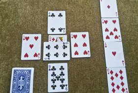
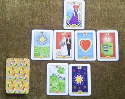
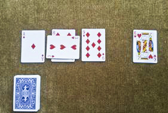

Services
  
Tarot Card Readings: Tarot cards provides provide an in depth reading of your life, past , present and future. Having the meaning of each tarot card is a crucial part of learning to read the cards properly. For each card in the tarot deck, the meaning changes whether upright or reversed and there is a spectrum of possible tarot card meanings as opposed to just one meaning. That's why so much emphasis is placed on tarot card meanings - so much of the reading information and accuracy comes from properly understanding the tarot cards that you've been dealt.
Intuitive Readings: Intuition is receiving input and ideas without knowing exactly how and where you got them from. You simply know it is not from yourself. Like creativity, intuitive inspiration often happens when someone virtually fuses in an activity, when one is highly focused on the respective activity in a state of joy and fulfillment. Intuition can be trained and in its highest level leads into a conscious contact with non-incarnated beings, a process usually called channeling.
Psychic Readings: A psychic reading is a specific attempt to discern information through the use of heightened perceptive abilities; or natural extensions of the basic human senses of sight, sound, touch, taste and instinct.
Spiritual Readings: A spiritual reading is when we have problems we often look outside our own souls for the solution. Relationship problems are the classic example; it is often the partner that is causing an issue and hindering your path of destiny and desires.
Dream Interpretations: Dream Interpretation is the process of assigning meaning to dreams. Dreams can be mysterious, and understanding their meaning can be very confusing. I use dream interpretation to simply unravel and tell the story of your dreams.